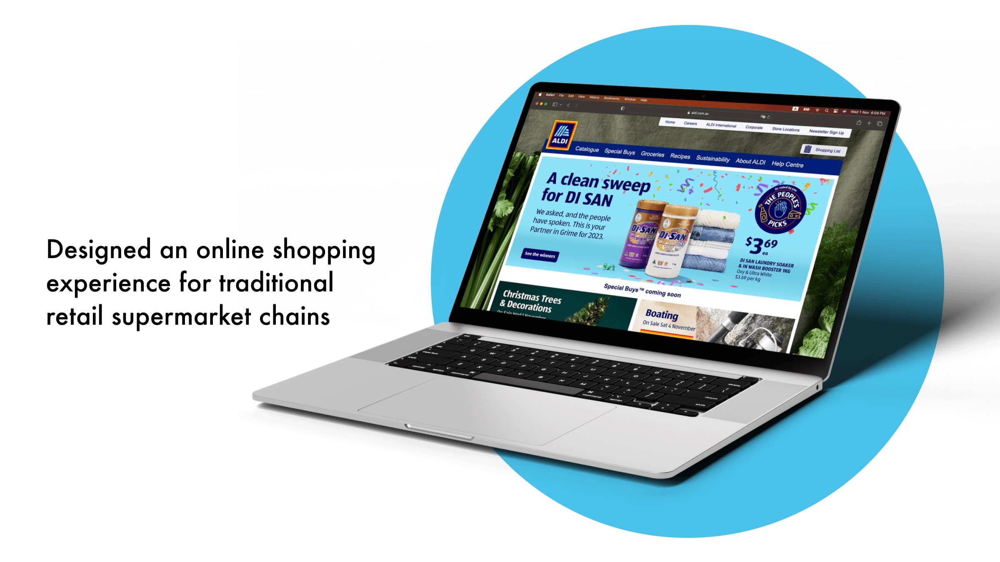
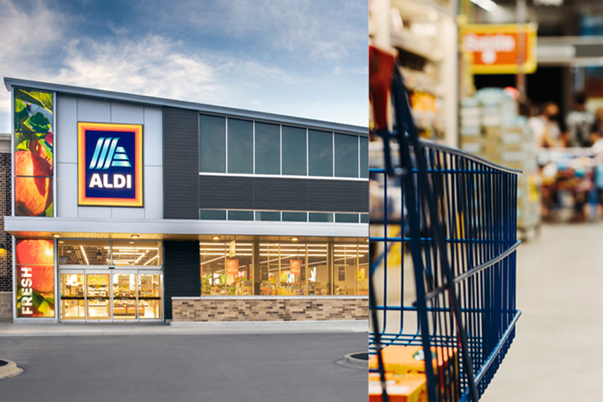

Taking a supermarket online.
COVID-19 rewired how Australians buy groceries. Our team designed a digital transformation strategy for ALDI — from 30 user interviews to a prototyped online shopping experience.
Explore the screen-flow libraryThe problem
"Peter needs a convenient way to buy groceries because he wants to be efficient with his time."
ALDI's "good different" value positioning won price-conscious shoppers in store — but the pandemic pushed grocery spending online, where Woolworths and Coles were already waiting.
The process
Research
- Company and 4P analysis of ALDI's brand positioning
- COVID-19 impact assessment on grocery spending
- Competitor benchmarking against Woolworths and Coles
- 30 guerrilla and virtual user interviews, synthesised with affinity mapping
- Two personas capturing distinct shopper mindsets
Ideation
- How-Might-We sessions and Crazy 8s sketching
- Card sorting to shape product categorisation
Design & testing
- User flows for the full online shopping journey
- 30+ prototype pages across homepage, product and checkout
- User testing surfaced navigation, CTA and payment-clarity issues to iterate on
The solution
- Digitalisation — a comprehensive online shopping platform true to ALDI's no-frills brand
- Effortless payments — top-up accounts and subscription-style payment to cut checkout friction
- Flexible delivery — an Uber Groceries partnership plus self-pickup lockers in residential areas as the cost-efficient alternative
Taking a no-frills promise online.
The concept translates a familiar supermarket into a direct digital shopping proposition without losing price-led clarity.


The outcomes
Testing exposed exactly where the concept needed work:
- Users expected product details — not the cart — when tapping product images
- Call-to-action buttons were hard to locate
- Subscription payment mechanics needed clearer explanation
What I learned
- "Done is better than perfect" — agile time management under a very short deadline
- Teamwork runs on empathy and balance, not just process